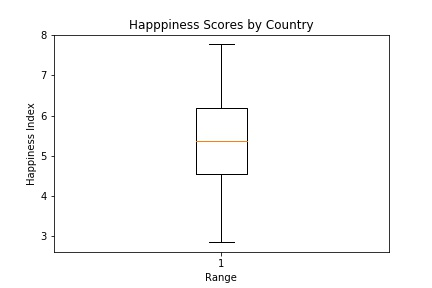
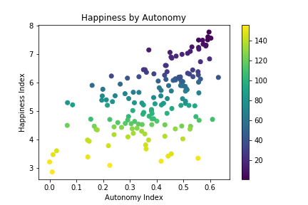
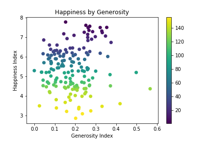

Each year. the UN Sustainable Development Solutions Network compiles the World Happiness Report, an ambitious annual publication examining the level of happiness of its respondents. This data is aggregated by country and cross referenced by human development indices, including freedoms by county, perceived corruption of government officials, GDP per capita, etc.
Essentially, a nerdy group of scientists look at how happy people are based on national circumstance.
This project seeks to analyze the 2019 results from 156 countries and identify common patterns. Each graph plots a nation’s happiness score and a human development index and highlights the overall rank of each country within the scatterplot. This will allow us to see where higher and lower ranked countries fall within the dataset.
Click on a graph to the side or in the menu button to view individual indices. You can also compare multiple graphs and review the source data. Let’s get started!
Autonomy
Generosity
